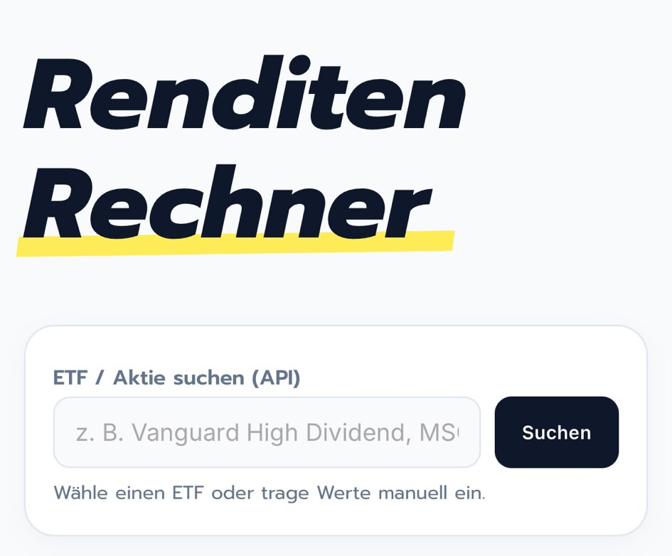

 Release: 09.08.2026 Valtro: My new big project Documentation about my project Valtro, a web-app tool to calculate long-term wealth accumulation by compounding initial capital, monthly deposits, and annual interest rates. Website PWA Project Open